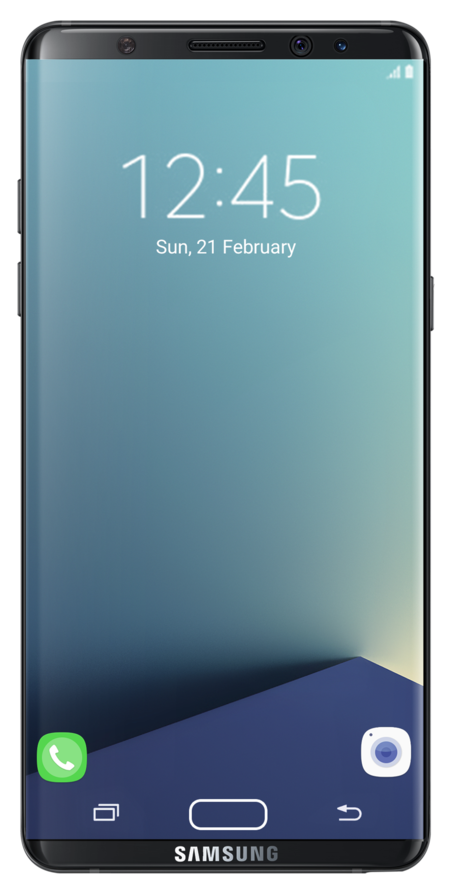
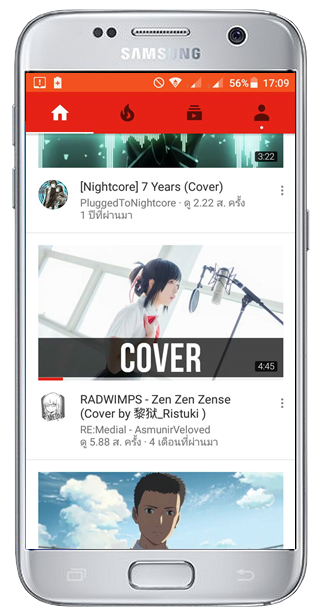
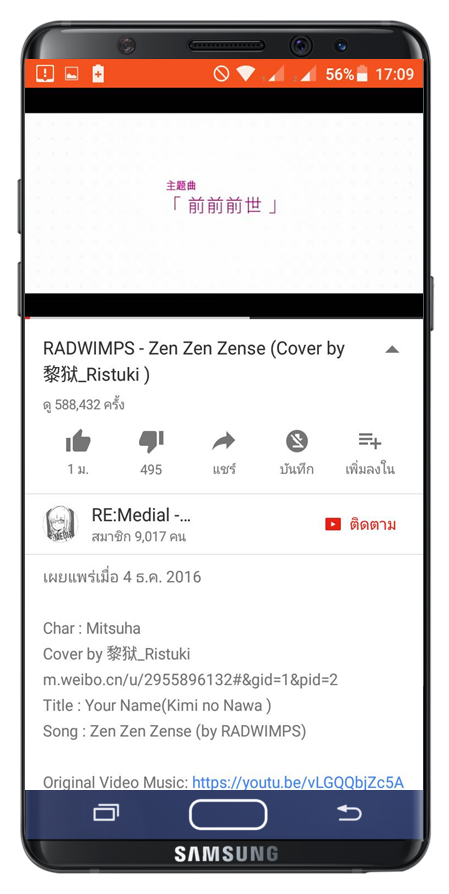
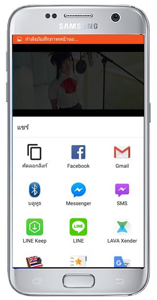
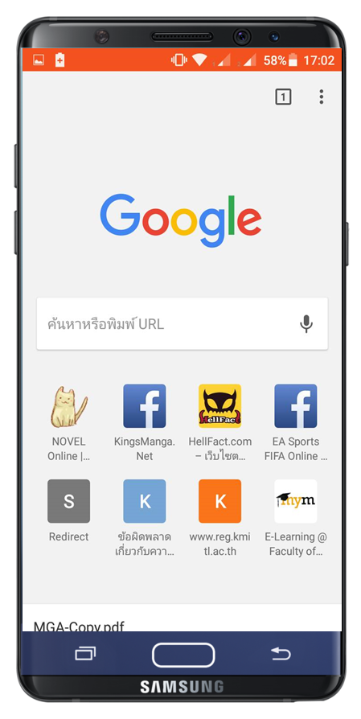
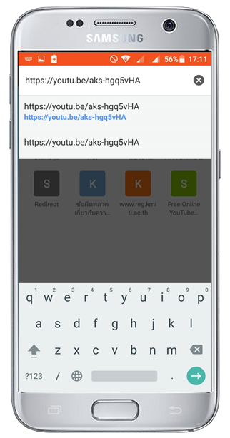
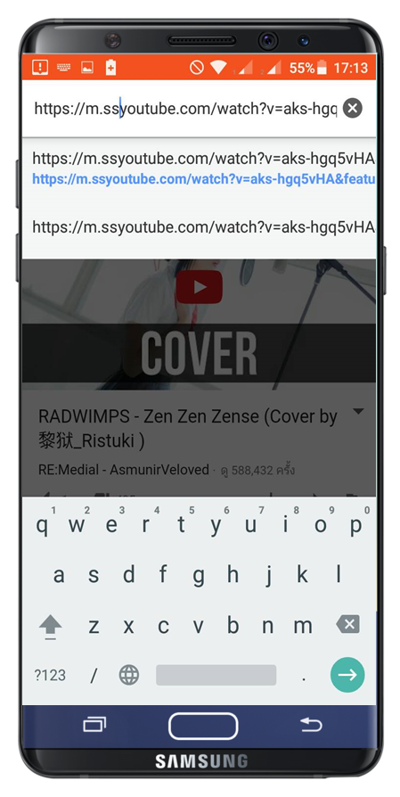
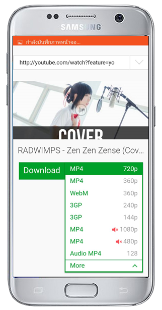

อธิบายขั้นตอนการดาวน์โหลด
เนื่องจากปัญหาที่โทรศัพท์มือถือไม่สามารถดาวน์โหลดคลิปจาก youtube ได้ พวกเราจึงจะมาสอนการโหลดคลิป โดยการใช้เว็บ http://en.savefrom.net/ ในการดาวน์โหลด
GO TO
INDEX
ขั้นตอนที่ 1
1.1 เปิดโปรแกรม Youtube ในโทรศัพท์ขึ้นมา
1.2 เลือกคลิปวีดีโอที่ต้องการจะ Download


ขั้นตอนที่ 2
2.1 สังเกตที่ปุ่ม "บันทึก" ว่าใช้ได้หนือไม่
2.2 ในกรณีที่ใช้ไม่ได้ให้กดปุ่ม "แชร์"
ขั้นตอนที่ 3
3.1 สังเกตหาปุ่ม "คัดลอกลิ้งก์" หรือ "copy url" แล้วกดเลือก


ขั้นตอนที่ 4
4.1 เปิดโปรแกรม Chrome ในโทรศัพท์ขึ้นมา
4.2 แล้วเปิดหน้าจอว่างสำหรับว่างลิ้งก์เว็บ
ขั้นตอนที่ 5
5.1 วางลิ้งก์ที่ก็อปปี้มา แล้วกดไป


ขั้นตอนที่ 6
6.1 เมื่อปรากฎหน้าวิดีโอขึ้นมาให้เรากดตรงลิ้งก์เว็บด้านบน
6.2 เติมคำว่า "ss" หน้าคำว่า "youtube" แล้วกดไป
ขั้นตอนที่ 7
7.1 เลือกคุณภาพของวีดีโอที่ต้องการดาวน์โหลด
7.2 ขั้นตอนสุดท้าย ให้กดเราปุ่ม "Download"
